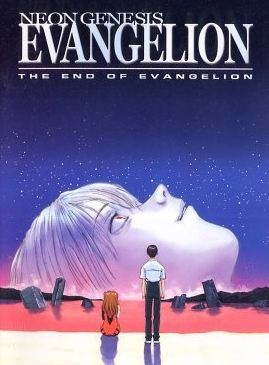
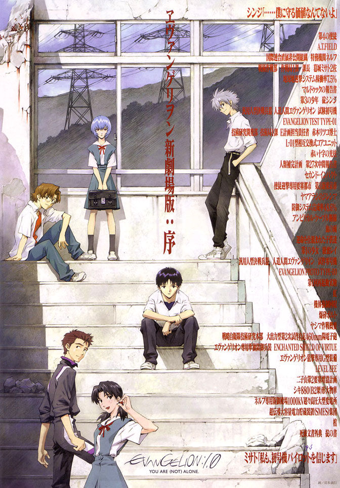
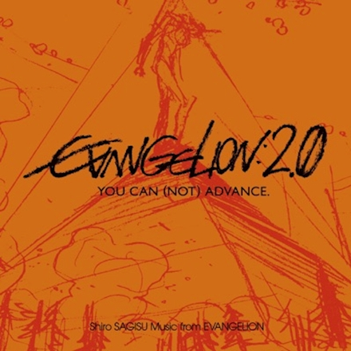
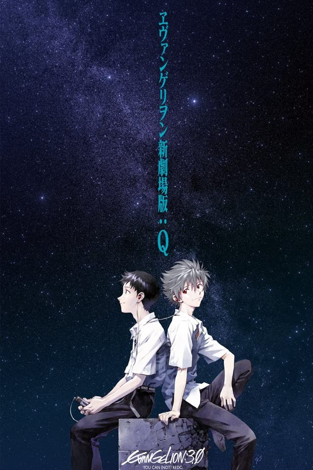

Filmes
Sabendo que os 2 últimos episódios de Neon Genesis Evangelion foram totalmente improvisdos devido a falta de custo do estúdio Gainax, para consertar e dar um final definitivo a história foram produzidos alguns filmes para tal.
•The End Of Evangelion

Situado após o final do episódio 24 do anime, The End of Evangelion substitui (ou complementa, dependendo da interpretação de quem assiste) os dois últimos episódios da série original.
Com a iminência do Plano de Instrumentalização Humana, Shinji Ikari descobre a verdade sobre a própria família e, novamente, tem de lidar com questões que vão muito além de batalhas entre robôs gigantes. O final do filme ainda mantém parte da essência abstrata da conclusão do anime, mas oferece um desfecho com muito mais explicações objetivas a respeito da trama.
Há quem diga que esse é o verdadeiro final de Evangelion quando comparamos o longa animado de 1997 com o primeiro anime, mas poucos esperavam pelo que estava por vir, os chamados "Rebuilds"
Rebuilds
•EVANGELION: 1.0 YOU ARE (NOT) ALONE

Em 2007, um novo filme animado situado no universo de Evangelion foi lançado. Tratava-se do primeiro longa-metragem animado do projeto conhecido como Rebuild of Evangelion.
Evangelion: 1.0 You Are (Not) Alone reconta a história do anime de maneira consideravelmente fiel à obra original, servindo como uma espécie de remake. Contudo, detalhes espalhados pelos cenários não passam despercebidos por quem acompanhou o seriado original até o final e assistiu a The End of Evangelion.
Você conhece a teoria de que vivemos ciclos que se repetem, certo? Pense em Rebuild of Evangelion como uma repetição da história original que não ignora o que aconteceu na primeira versão, mas permite alguns desvios ao longo do caminho. É confuso, mas tudo fará sentido quando você assistir.
•EVANGELION 2.0: YOU CAN (NOT) ADVANCE

Somente no segundo filme de Rebuild of Evangelion, lançado em 2009, Asuka se une a Shinji e Rei. Com o trio principal junto novamente, você pode até pensar que as coisas seguiriam como na série original, mas... Não, é completamente diferente.
Além da introdução de uma nova piloto de EVA, os acontecimentos em si jogam os personagens numa direção completamente nova. Há quem tenha reclamado e há quem tenha gostado; fato é que você precise assistir para tirar as próprias conclusões.
Evangelion 2.0: You Can (Not) Advance foi elogiado por boa parte da crítica e costuma ser considerado o melhor dos três primeiros filmes do Rebuild. Já o pior...
•EVANGELION 3.0: YOU CAN (NOT) REDO

Situado 14 anos após o segundo filme do Rebuild, Evangelion 3.0: You Can (Not) Redo foi lançado em 2012. Na linha do tempo de Rebuild of Evangelion, Shinji só conhece Kaworu nesse filme. Eles chegam até mesmo a pilotar um EVA juntos, acredite se quiser. No entanto, a recepção por parte da crítica e dos fãs foi bem morna.
O longa animado mostra Misato Katsuragi como líder de uma nova organização chamada WILLE e traz revelações extremamente importantes para a trama. A verdade sobre Rei, sobre os EVA; tudo é revelado de maneira surpreendentemente expositiva.
EVANGELION: 3.0+1.0 THRICE UPON A TIME
Sim, foram nove anos de espera. O quarto e último filme de Rebuild of Evangelion foi lançado em 2021 no Ocidente e trouxe a conclusão definitiva de toda a obra.
Com respostas para perguntas que muitos se faziam há tempos, o quarto filme resgata o sentimento abstrato das conclusões da série original e de The End of Evangelion, fazendo referências evidentes, principalmente, ao filme lançado após o final da série original.
Com muito mais desenvolvimento para o pai de Shinji, batalhas insanas envolvendo Asuka e Mari, cenas particularmente cativantes focadas na Rei e um final absolutamente emocionante, o quarto filme de Evangelion encerra o ciclo da história e reflete até mesmo como Hideaki Anno mudou com o passar do tempo.
É quase impossível acreditar que um único filme conseguiu concluir de maneira coerente e satisfatória toda a construção desse universo extremamente complexo, embora alguns simbolismos exijam bastante atenção e certos detalhes só possam ser percebidos em uma segunda vez assistindo.